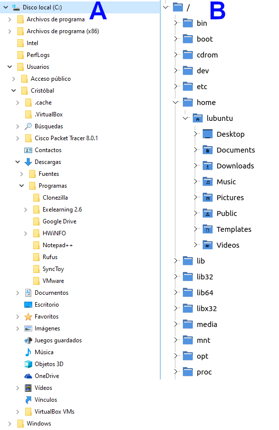

1.- Descripción de la tarea
Caso práctico
Ada, fundadora de la empresa BK Programación, ha visto una oportunidad excepcional de promocionar la empresa aprovechando una exposición temporal denominada "Historia del software: Sistemas Operativos" que se va a alojar en la localidad.
La empresa, a la que se le ha pedido colaboración, realizará un análisis de los distintos Sistemas Operativos así como de otros tipos de software que han surgido a lo largo de la historia.
También va a averiguar qué licencias se utilizan en los sistemas operativos y distintos programas que se utilizan en la actualidad.
¿Qué te pedimos que hagas?
Realiza las siguientes actividades:
Actividad 1.- Estructuras de directorios y rutas.
Considera las siguientes estructuras de directorios para un equipo con SO Windows 10 (A) y uno con SO Lubuntu 21.04 (B):

Para el equipo con Windows (A), escribe las siguientes rutas:
- Una ruta absoluta al directorio "Rufus".
- Una ruta relativa al directorio "Rufus", considerando que el directorio de trabajo/activo actual sea "Documentos".
Para el equipo con Linux (B), escribe las siguientes rutas:
- Una ruta absoluta al directorio "Music".
- Una ruta relativa al directorio "media", considerando que el directorio de trabajo/activo actual sea "Videos".
Actividad 2.- Sistemas Operativos: Última versión, requisitos hardware, licencia y campos de aplicación.
Realiza la siguiente tabla añadiendo una fila por sistema operativo con la última versión existente de:
- Windows 10 (canal semianual).
- Ubuntu Desktop LTS (versión con soporte de larga duración).
- iOS (para iOS, en lugar de "requisitos hardware", incluye una lista con los dispositivos que soportan la última versión).
- Android (para Android, incluye las características hardware de un dispositivo que utilice la última versión).
| Sistema Operativo | Última versión | Requisitos hardware | Licencia | Dispositivos en los que normalmente se instala | ||
| Procesador | RAM | Espacio de almacenamiento | ||||
|
|
|
|
||||
Actividad 3.- Arquitectura interna de un Sistema Operativo.
Para poder conocer el uso de los distintos tipos de núcleos realiza una pequeña comparativa sobre los sistemas operativos con arquitectura monolítica y las máquinas virtuales, rellenando la siguiente tabla:
| Esquema gráfico de la arquitectura | Ventajas | Desventajas | Sistemas Operativos que la utilizan (al menos 2) |
|
| Monolítica | ||||
| Máquina Virtual |
Actividad 4.- Gestión de Procesos.
Sabemos las siguientes características sobre un sistema operativo:
- Utiliza el algoritmo de Round Robin, con rodaja de tiempo o Quantum = 4 Unidades de Tiempo (UT).
- Necesita ejecutar una serie de procesos, cuyos instantes de llegada y tiempos que tardan en ejecutarse se representan en la siguiente tabla:
| Proceso | Llegada | Tiempo de CPU |
| A | 0 | 5 |
| B | 1 | 4 |
| C | 3 | 8 |
| D | 7 | 1 |
| E | 15 | 2 |
- Los procesos se ejecutan en un sistema operativo ideal, es decir, en el que el sistema operativo no consume recursos de CPU.
- Comenzamos a estudiar el sistema desde que entran nuestros procesos al sistema y considerando la Unidad de Tiempo 0 (UT0),
- En la siguiente tabla se pueden apreciar los procesos que se ejecutan en estas condiciones desde la Unidad de Tiempo 0 (UT0) a la Unidad de Tiempo 1 (UT1).
| 0 | 1 | 2 | 3 | 4 | 5 | 6 | 7 | 8 | 9 | 10 | 11 | 12 | 13 | 14 | 15 | 16 | 17 | 18 | 19 | |
| A | ↓1 | 2 | ||||||||||||||||||
| B | ↓ | |||||||||||||||||||
| C | ||||||||||||||||||||
| D | ||||||||||||||||||||
| E |
Leyenda:
| ↓ | Proceso ha llegado y está listo para ejecutarse en ese instante |
| F | Proceso termina en ese instante |
| # | Proceso se está ejecutando (# representa el instante de ejecución) |
| Proceso está esperando en la cola de procesos listos |
Respetando todas las restricciones dadas en el enunciado:
- Completa la tabla anterior para las unidades de tiempo de la 2 a la 19, estableciendo el proceso que se ejecutará en cada unidad de tiempo e indicando los instantes de llegada de cada proceso. Utiliza la nomenclatura y/o simbología que aparece en la leyenda.
- Razona tu respuesta especificando el estado en el que se encuentra cada uno de los procesos para las unidades de tiempo de la 2 a la 8.
Nota: En el apartado "3.2.- Planificación apropiativa y no apropiativa" de la unidad tienes vídeos con ejemplos resueltos de los principales algoritmos de planificación estudiados.
Actividad 5.- Gestión de memoria.
Supón un sistema en el que la gestión de memoria se realiza siguiendo un esquema de asignación de particiones fijas o estáticas. La capacidad de la memoria es de 4000 KB, de los cuales 500 se encuentran ocupados por el sistema operativo, y el resto queda dividido en las siguientes particiones de memoria vacías al iniciar el sistema:
| 4000 KB | Partición 5 (300 KB) |
| Partición 4 (400 KB) |
|
| Partición 3 (800 KB) |
|
| Partición 2 (900 KB) |
|
| Partición 1 (1100 KB) |
|
| 500 KB | Sistema Operativo (500 KB) |
| 0 KB |
Todas las particiones comparten una única cola de procesos y se utiliza la asignación por "el mejor ajuste", de manera que cada proceso se asigna a la partición libre que mejor se ajuste a su tamaño.
En la cola de procesos se encuentran los siguientes procesos, los cuales se ubicarán en memoria en el mismo orden que se muestran (primero A, luego B, etc.):
- Proceso A: 280 KB
- Proceso B: 1000 KB
- Proceso C: 500 KB
- Proceso D: 800 KB
Ubica cada proceso donde le corresponda, muéstralo en una imagen, y contesta a las siguientes preguntas:
- Indica en la imagen claramente en qué partición se ubicaría cada proceso.
- Indica para la partición 3 si existe fragmentación. En caso afirmativo, indica de qué tipo y por cuánta cantidad.
- Indica si se podría ubicar algún proceso más. En caso afirmativo, indica en qué partición se ubicaría y cuál sería su tamaño máximo.
Actividad 6.- Aplicaciones. Tipos de licencias.
Indica para cada una de las siguientes aplicaciones el tipo de licencia que utiliza, intentando dar en términos generales si se trata de una licencia propietaria, de software libre, de código abierto, semilibre, de dominio público, copyleft, etc., y de manera específica la licencia exacta que utiliza, si puedes encontrar dicho dato, como "licencia MIT", "licencia Apache", "GNU GPL", etc. Por ejemplo: El programa de edición de gráficos GIMP usa una licencia GPLv3+, que es una licencia de software libre de tipo copyleft.
Las aplicaciones son las siguientes:
- LibreOffice
- Microsoft Office 365
- Blender
- VirtualBox
- Google Chrome (navegador de Internet)
- GIMP
NOTA:
- Si se requiriese realizar capturas de pantalla, éstas deben ser perfectamente legibles y deben incluir el usuario o la usuaria de la plataforma.
- La tarea se elaborará en un único documento que se entregará en formato PDF.